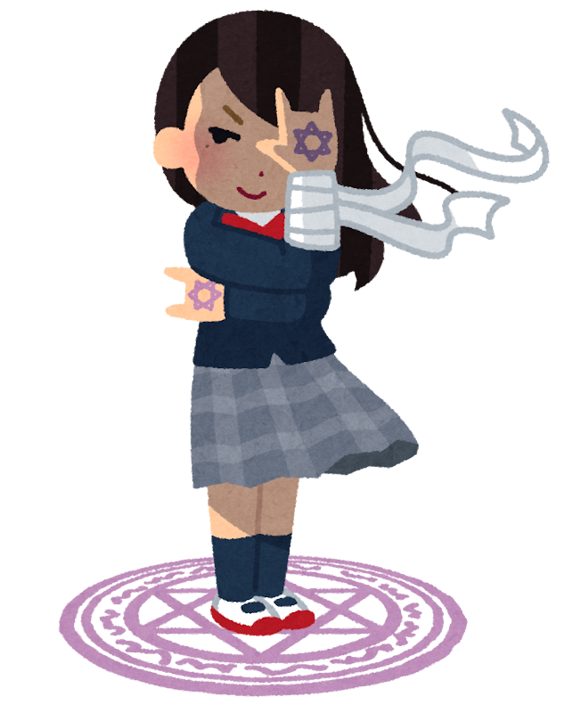
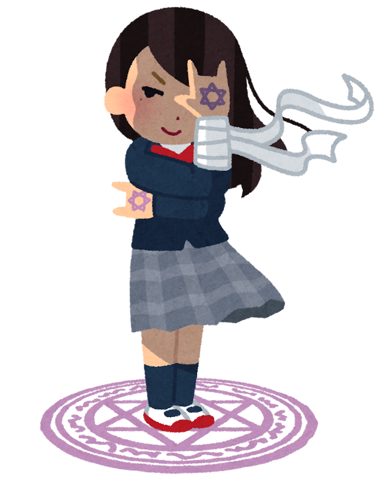

このサイトは
3つの診断メーカーを楽しんでもらうことを
目的としています。
診断1:中二病適性診断
この診断では，6つの質問に解答してもらうことで
普段あなたがどれだけ非現実的な妄想をしているかを診断します．
診断2:適正ジョブ診断
二つの質問から，あなたにピッタリのジョブを診断します．
RPGでジョブ選びに困ったときにぜひご活用ください．
診断3:日本人アーティスト診断
4つの質問に解答して貰うことで，今の回答者におすすめの日本人アーティストを診断します．
アーティストとの新たな出会いをお求めの方はご活用ください．
 
